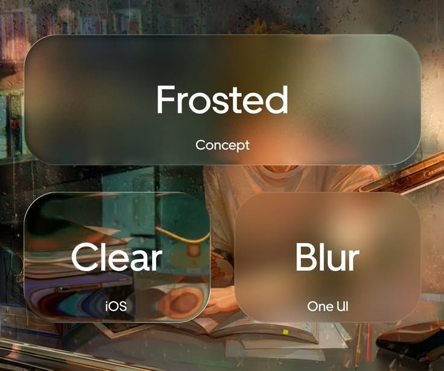
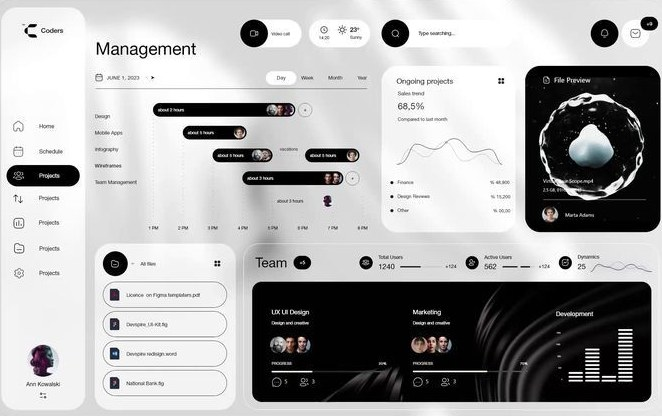

One — a visitor decides in about a second.
Two — so the first screen carries the whole offer.
Three — everything after it earns attention or loses it.
Four — motion is how you spend that attention.
CSS Animations · Scroll

Real scroll position drives every effect below — no fixed timers, no faked progress.
The bar above and the ring below-left are both live.

Reference
Four decisions are doing the work. The frame stays pinned while they scroll past it.
reveal-direction-aware has to know which way the page is travelling, and no CSS timeline exposes that.reveal-repeat was dropped — byte-identical to reveal-once once the binder stopped re-observing after first entry. It is gone from the catalog, not pending.Reveal, fade & skew — 3



Same effects, different elements — 2
A still on the left, a video on the right, and nothing about either
primitive knows or cares which is which. The left card composes an entrance with a blur, the right
one uses a scroll primitive instead — both scrub with scroll position and run backwards on the
way up. The video is muted, loop, playsinline and
preload="none", and only starts once it is actually on screen.

Parallax — 5


parallax-rotate, pinned — half a turn unwound across a 200vh hold.

Entrances on a view timeline — 4


Video — 3 slots reserved
Landscape tiles held for the next three walkthroughs.
Catalog section C — 11 named effects, all real primitives through the shared JS orchestrator.
Pinning — 4
pin-section holds an element still while the page keeps moving under it.
pin-section, pin-until, pin-spacer, stacking-cardsscroll-spy highlights the active section in the navscroll-snap-x/-y, no JS involvedpin-until is the sticky-sidebar pattern — no spacer inserted.

pin-spacer is the same primitive as pin-section, named for what it does.<div data-kui-spacer> — an actual node in the DOM, not a drawing of one.stacking-cards is the pin primitive applied once per card.offset, so the deck builds itself as you scroll.


Scrollytelling — 1
One — a visitor decides in about a second.
Two — so the first screen carries the whole offer.
Three — everything after it earns attention or loses it.
Four — motion is how you spend that attention.
data-kui-step onto the section as you pass through it.Horizontal travel — 1

Media scrub — 1 of 2
sequence-scrub's frames:/src: params swap in one real still per fifth of the
scroll range via a {i} placeholder in the src pattern — five distinct photos
below, not a filter effect. src is a JS-only text param, so the value never
reaches a stylesheet — it goes straight to <img>.src — which is why the shared
CSS-escape guard on data-kui values leaves braces alone for this one param. The
grayscale→color wipe is a second effect composed onto the same element —
scroll-desaturate timeline:pin — reading the same --kui-progress the
scrub publishes, so both mechanisms are visible scrolling through this one element.

data-kui="sequence-scrub frames:5 src:./assets/webdesign/webdesign_scrub_{i}.jpg distance:220vh, scroll-desaturate timeline:pin"
Navigation — 1
scroll-spy marks the section you are currently looking at.target you point it at — here, the matching nav link.
Category
Category
Category
Category
Native CSS passthroughs — 2
scroll-snap-type and -align.